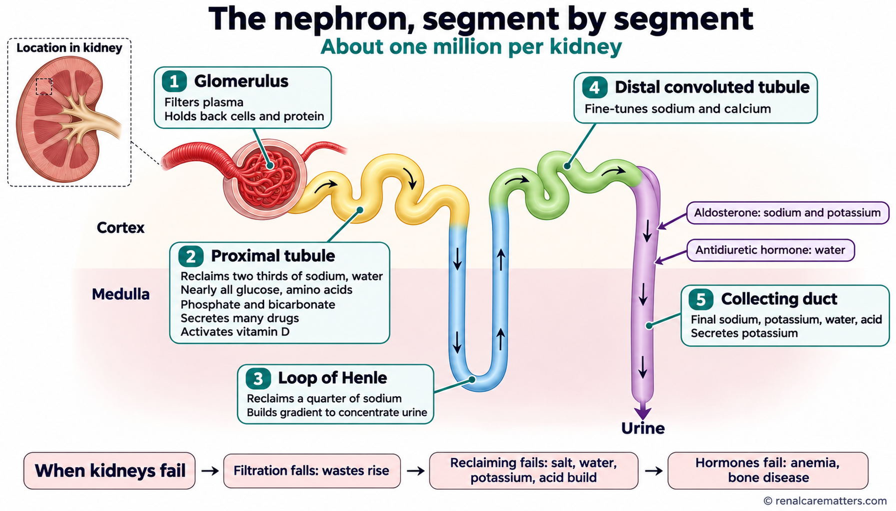
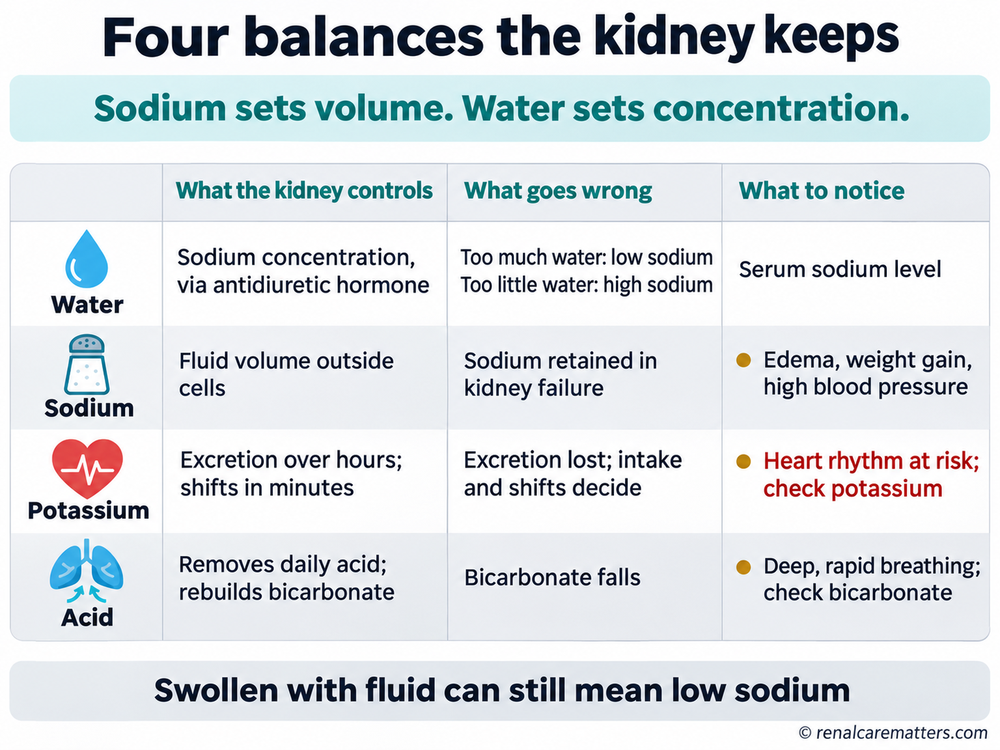
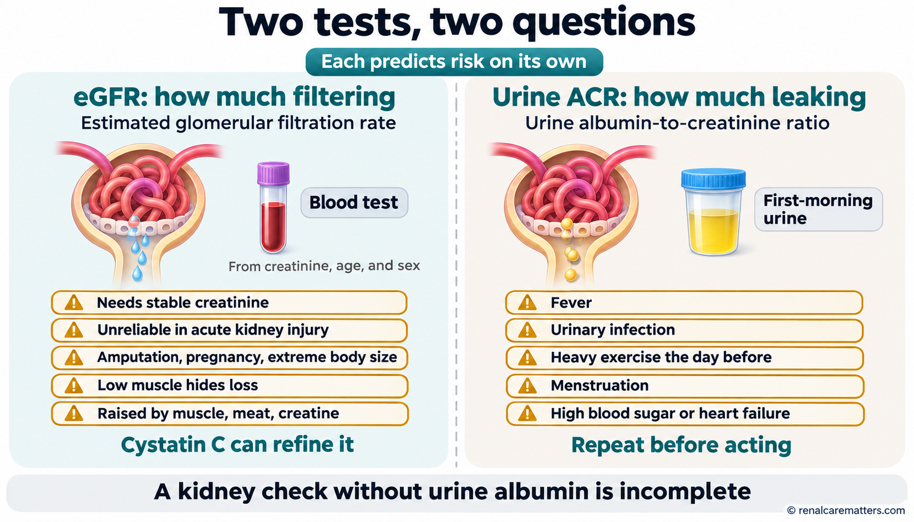
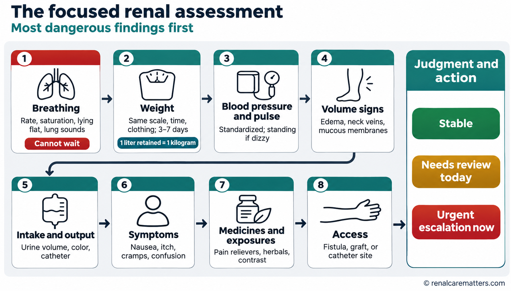

After this module you should be able to
- Explain filtration, tubular reabsorption and secretion, and how they keep fluid, electrolytes, and acid–base status stable.
- Describe the kidney’s hormonal work: erythropoietin, activation of vitamin D, and the renin–angiotensin system.
- Perform and document a focused renal assessment: weight trend, blood pressure, volume status, breathing, urine, and access or catheter sites.
- Interpret estimated glomerular filtration rate and urine albumin-to-creatinine ratio as the two core kidney tests.
- Recognize possible fluid overload and prioritize the immediate respiratory assessment and escalation.
- Relate each nephron segment to the laboratory and clinical findings that appear when it fails.
- Interpret a urinalysis and a urine albumin-to-creatinine ratio, including common false results.
- Recognize the breathing pattern and laboratory picture of metabolic acidosis.
A filter that throws almost nothing away
Think of the kidneys as a water-treatment plant that works backward. Instead of picking wastes out of the blood, each kidney first pushes a large volume of plasma water through about a million filters, then spends most of its energy taking back what the body needs. Roughly 180 liters are filtered each day and only 1 to 2 liters leave as urine. What is left behind in that small volume is the day’s surplus of water, salt, potassium, acid, and nitrogen waste.
The picture matters at the bedside because it tells you what to expect when kidneys fail. Filtration falls, so wastes rise. Reclaiming and fine-tuning fail, so salt and water accumulate, potassium climbs, and acid builds. The hormonal work fails quietly, so anemia and bone disease appear months later. Nearly every finding in a renal assessment traces back to one of these three losses.
Filtration, tubular work, and hormones
Filtration. Blood enters each glomerulus under pressure, and water with small solutes crosses the filtration barrier while cells and most protein stay behind. The volume filtered per minute is the glomerular filtration rate (GFR). Because GFR cannot be measured directly in routine care, laboratories report an estimated glomerular filtration rate (eGFR) calculated from serum creatinine, age, and sex; the current creatinine equation no longer uses a race term.1 An intact barrier also keeps albumin out of the urine, which is why albumin in the urine signals kidney damage even when eGFR is still normal.
Tubular work. The tubules reabsorb about 99% of filtered water and sodium, most of it in the proximal tubule and loop of Henle, with the final adjustments made in the distal nephron under the control of aldosterone and antidiuretic hormone. Potassium is mainly excreted by secretion in the distal nephron, so a fall in urine flow or in sodium delivery limits potassium removal. The tubules also reclaim filtered bicarbonate and excrete the daily acid load as ammonium. When these functions fail, the results are predictable: edema and hypertension, hyperkalemia, and metabolic acidosis.
Hormones. Specialized cells in the kidney cortex sense oxygen delivery and release erythropoietin, the signal that tells the bone marrow to make red blood cells. The proximal tubule converts vitamin D to its active form, calcitriol, which supports calcium absorption from the gut. The kidney also releases renin, the first step of the renin–angiotensin–aldosterone system that defends blood pressure and sodium balance. Loss of erythropoietin leads to anemia; loss of calcitriol, together with phosphate retention, drives the mineral and bone disorder covered in Module 3.
The nephron, segment by segment
Each kidney holds roughly one million nephrons, and each nephron is a filter followed by a long tubule with specialized segments. Knowing what each segment does explains three things a nurse meets daily: where each diuretic acts, why particular electrolyte problems travel together, and why different kidney diseases look different at the bedside.
| Segment | Main work | Medicines that act here | What failure or blockade looks like |
|---|---|---|---|
| Glomerulus | Filters plasma; holds back cells and protein | Renin–angiotensin system inhibitors and sodium-glucose cotransporter-2 (SGLT2) inhibitors lower the pressure inside it | Albumin or blood in the urine; falling filtration |
| Proximal tubule | Reclaims about two thirds of filtered sodium and water, nearly all glucose, amino acids, phosphate, and bicarbonate; secretes many drugs; activates vitamin D | SGLT2 inhibitors; acetazolamide | Glucose in the urine with normal blood sugar; low phosphate; acidosis with a normal anion gap |
| Loop of Henle | Reclaims about a quarter of filtered sodium; builds the salt gradient that lets the kidney concentrate urine | Loop diuretics such as furosemide | Large urine volumes; loss of potassium, magnesium, and calcium |
| Distal convoluted tubule | Fine-tunes sodium and calcium | Thiazide-type diuretics | Low sodium and potassium; calcium retained |
| Collecting duct | Final control of sodium and potassium under aldosterone, of water under antidiuretic hormone, and of acid | Spironolactone, amiloride; finerenone | High potassium and acidosis when aldosterone is blocked or absent; dilute urine when antidiuretic hormone does not act |
Two practical consequences follow. First, loop diuretics still work when filtration is low, which is why they are the usual diuretic in advanced kidney disease, although larger doses are needed because less drug reaches the tubule. Second, any medicine that blocks aldosterone or the renin–angiotensin system reduces potassium excretion in the collecting duct, so potassium is checked after these are started or increased.

Water, sodium, potassium, and acid: four balances
Sodium sets volume; water sets concentration. These are separate systems, and confusing them is a common source of error. The body's sodium content determines how much fluid sits outside the cells, so too much sodium appears as edema, weight gain, and hypertension, not as a high sodium level. The serum sodium concentration reflects water balance: a low sodium level usually means too much water relative to salt, and a high level means too little water. A patient can therefore be swollen with fluid and have a low serum sodium at the same time, and the usual prescribed approach is to limit water, not to give salt; the cause is assessed by the physician.
Three hormone systems run these balances. The renin–angiotensin–aldosterone system responds to low kidney perfusion by constricting blood vessels and retaining sodium. Antidiuretic hormone responds to concentrated blood or low circulating volume by making the collecting duct reabsorb water. Natriuretic peptides, released when the heart is stretched, push the kidney to excrete sodium. In kidney failure the first is often overactive and the last cannot overcome the loss of nephrons, so sodium is retained.
Potassium. Only about 2% of the body's potassium is outside cells, yet that small pool sets the electrical stability of the heart. Two processes control it. Shifts between cells and blood happen in minutes: insulin and beta-agonists drive potassium into cells, while acidosis, tissue breakdown, and lack of insulin let it leak out. Excretion happens over hours, mostly through the kidney and to a smaller extent the bowel. When kidneys fail, excretion is lost and the patient depends on shifts and on intake, which is why a missed dialysis session, a potassium-rich meal, constipation, or a transfusion of stored red cells can each tip the balance.
Acid. Normal metabolism of dietary protein generates acid every day. The lungs remove carbon dioxide within minutes; only the kidneys remove the remaining acid and rebuild bicarbonate. When they cannot, serum bicarbonate falls. The body compensates by breathing more deeply and quickly to blow off carbon dioxide, so a patient with significant metabolic acidosis may have deep, sighing respirations without lung disease. On a blood gas the pattern is low pH, low bicarbonate, and low carbon dioxide. In nursing terms: unexplained deep or rapid breathing in a patient with kidney disease is a reason to check a bicarbonate, not only an oxygen saturation.

Why two tests, not one
The Kidney Disease: Improving Global Outcomes (KDIGO) 2024 guideline classifies chronic kidney disease (CKD) by cause, GFR category, and albuminuria category, because eGFR and the urine albumin-to-creatinine ratio (ACR) each predict kidney failure, cardiovascular events, and death independently of the other.2 A person with an eGFR of 70 and heavy albuminuria can be at higher risk than a person with an eGFR of 50 and none. For nurses this has a practical meaning: a kidney check that includes creatinine but no urine albumin is incomplete, and asking whether an ACR has been done is a legitimate nursing prompt.
Serum creatinine has limits. It depends on muscle mass and diet, and it lags behind a sudden change in kidney function by a day or more. A small rise in a frail older adult can represent a large loss of filtration. Blood urea nitrogen (BUN) rises with dehydration, bleeding into the gut, and high protein breakdown as well as with kidney failure, so it is read alongside creatinine, not instead of it.
Blood pressure is the other measurement that changes decisions. KDIGO recommends standardized office measurement: a validated device, the correct cuff size, the patient seated and rested for 5 minutes with back supported and arm at heart level, and no talking.3 A hurried reading on a full bladder can overstate systolic pressure enough to change a prescription.
Reading kidney tests without being misled
| Test | What it tells you | What misleads |
|---|---|---|
| Serum creatinine | Waste from muscle, cleared by filtration; rises as filtration falls | Low in small, frail, or malnourished people, so a "normal" value may hide reduced function; raised by large muscle mass, a cooked-meat meal, creatine supplements, and some medicines (trimethoprim, cimetidine) that block its secretion without harming the kidney |
| Estimated glomerular filtration rate | Creatinine adjusted for age and sex; the basis for staging and drug dosing | Valid only when creatinine is stable; unreliable in acute kidney injury, amputees, pregnancy, and extremes of body size. Cystatin C can be added when a more accurate estimate would change a decision2 |
| Blood urea nitrogen | Waste from protein breakdown | Raised by dehydration, bleeding into the gut, steroids, and high protein intake; lowered by liver disease and malnutrition |
| Urine albumin-to-creatinine ratio | Albumin leak corrected for urine concentration; a first-morning sample is preferred | Temporarily raised by fever, urinary tract infection, heavy exercise in the previous day, menstruation, and uncontrolled blood sugar or heart failure. An abnormal result is repeated before it is acted on2 |
| Potassium | Excretion and shifts | Falsely high when the sample is hemolyzed, drawn with a tight tourniquet and fist clenching, delayed in transport, or taken from an arm with an infusion containing potassium |
| Bicarbonate (total carbon dioxide) | Acid–base reserve | Falls if the tube is underfilled or left open |
Urinalysis. A dipstick and microscopy cost little and say a great deal. Protein on a dipstick mainly reflects albumin but depends on how concentrated the urine is, so a dilute sample can miss significant albuminuria; this is why the ratio is preferred. Blood on the dipstick with red cells on microscopy points to the kidney or urinary tract; blood on the dipstick with no red cells suggests free hemoglobin or myoglobin, as in hemolysis or muscle breakdown. White cells and nitrite suggest infection. A specific gravity that stays near 1.010 whatever the patient drinks means the kidney has lost the ability to concentrate or dilute. Collect a clean midstream sample, send it promptly, and record whether the patient is menstruating or has a catheter, because both change the interpretation.

The focused renal assessment
A focused renal assessment is short, repeatable, and ordered so that the most dangerous findings come first.
| Step | What to assess | What it tells you |
|---|---|---|
| 1. Breathing | Respiratory rate, oxygen saturation, work of breathing, ability to lie flat, lung sounds | Pulmonary congestion from fluid overload is the finding that cannot wait |
| 2. Weight | Same scale, same time of day, similar clothing; compare with the last 3 to 7 days | A gain of a kilogram or more over a few days is fluid until proven otherwise |
| 3. Blood pressure and pulse | Standardized technique; standing pressure if dizzy | High with overload; a postural drop suggests depletion |
| 4. Volume signs | Edema (legs, sacrum, around the eyes), neck veins, mucous membranes | Supports the weight trend; no single sign is reliable alone |
| 5. Intake and output | Measured urine volume, color, foaming, catheter patency; oral and intravenous intake | Falling output is an early warning of acute kidney injury |
| 6. Symptoms | Nausea, poor appetite, itch, cramps, sleepiness, confusion | Uremic symptoms and electrolyte disturbance |
| 7. Medicines and exposures | Pain relievers, herbal products, recent contrast or antibiotics | Avoidable kidney stress (Module 2) |
| 8. Access | Fistula, graft, or catheter site if present | Protects the patient’s lifeline (Module 7) |
Weight is the single most useful number for fluid, because one liter of retained water weighs one kilogram. Blood pressure, edema, and lung sounds help interpret it, but each can mislead on its own: edema may reflect low albumin, and crackles may be absent early in overload. The assessment is complete only when it ends in a judgment and an action: stable, needs review today, or needs urgent escalation now.

The renal history and examination in more depth
Kidney disease is quiet until late, so much of the history is a search for clues the patient has not connected.
| Ask about | Why |
|---|---|
| Diabetes, hypertension, gout, kidney stones, recurrent urinary infections, autoimmune disease, hepatitis B or C | The common causes and associations of kidney disease |
| Family members with kidney failure, dialysis, or polycystic kidneys | Hereditary disease; also possible living donors later |
| Urine: volume, getting up at night, foaming, blood, poor stream, pain | Night-time urination is an early sign of lost concentrating ability; foam suggests protein; a poor stream suggests obstruction |
| Swelling of the face on waking or the legs by evening; shoes or rings tighter; weight change | Sodium and water retention |
| Appetite, nausea, metallic taste, itch, cramps, restless legs, poor sleep, difficulty concentrating | Uremic symptoms, usually appearing when filtration is severely reduced |
| Breathlessness on exertion or lying flat; chest pain | Fluid overload, anemia, heart disease, or pericarditis |
| All medicines, including pain relievers, herbal products, and supplements; recent contrast studies | Avoidable kidney injury |
| Occupation, wading in floodwater, recent fever | Heat stress and, in the Philippines, leptospirosis |
Examining volume status. No single sign is reliable, so findings are combined. Signs of excess: weight above baseline, raised blood pressure, visible neck veins when sitting at 45 degrees, pitting edema (press over the shin or, in a bedbound patient, the sacrum for several seconds), crackles at the lung bases, and breathlessness lying flat. Signs of depletion: weight below baseline, a fall in systolic pressure of 20 mmHg or more or dizziness on standing, a fast pulse, dry mouth and axillae, and reduced urine. Edema with a low blood pressure should prompt thought about low albumin, heart failure, or sepsis and is reported, not treated by assumption.
Standing blood pressure. Measure after 5 minutes lying or sitting, then again after 1 and 3 minutes of standing.3 Record both, with the pulse, and note symptoms. In people on dialysis, a pressure taken before and after treatment, sitting and standing, is part of every session under the unit protocol (Module 9).
The uremic patient. Late signs include a sallow or darkened skin tone with scratch marks, a urine-like odor on the breath, twitching or a flapping tremor of the outstretched hands, drowsiness, and a rubbing sound over the heart from pericarditis. These are indications for urgent medical review, because they are among the reasons kidney replacement is started.
Case: Rapid weight gain and orthopnea
Mang Ernesto, 62, has diabetes and stage 4 CKD and is admitted for a foot infection. On your morning round he says he slept sitting up because he could not breathe lying down. His weight is 71.4 kg; three days ago it was 68.6 kg. Blood pressure is 172/96 mmHg, pulse 98, respiratory rate 26, oxygen saturation 91% on room air. Both ankles are swollen. Yesterday’s chart shows 2.4 liters of intravenous fluids and 550 mL of urine.
Before reading on, decide what you would assess, what you would communicate and to whom, what you would teach, and what would make you escalate. Then compare with the outline below.
Assess
Communicate
Teach
Escalate
Check your understanding
Each visit draws 5 questions at random from this module’s 15-question bank, in a shuffled order. Choose the single best answer for each, then select Check answers; a rationale appears under every option. Reload the page or select New set of questions for a different mix. Nothing you select is sent anywhere; scoring happens in your browser.
With your preceptor
With your preceptor, complete a focused renal assessment on two patients and present each in under two minutes. These are prompts for supervised learning, not a procedure. Your preceptor observes and signs off each item on the unit’s own competency form; the educator page has a printable version.
- Measures blood pressure with standardized technique and correct cuff size.
- Obtains a comparable weight and states the trend against prior values.
- Assesses breathing and volume status in the correct priority order.
- States a judgment (stable, review today, or urgent) and the action taken.
Read next on this site
- How Your Kidneys WorkInteractive reference for filtration and tubular function.
- Understanding Your Kidney DiseaseHow eGFR and albuminuria are explained to patients.
- Finding Your True Dry WeightWhy weight is the anchor for fluid assessment in dialysis.
- KDIGO 2024 CKD guideline (evaluation chapter)Primary source (external site).